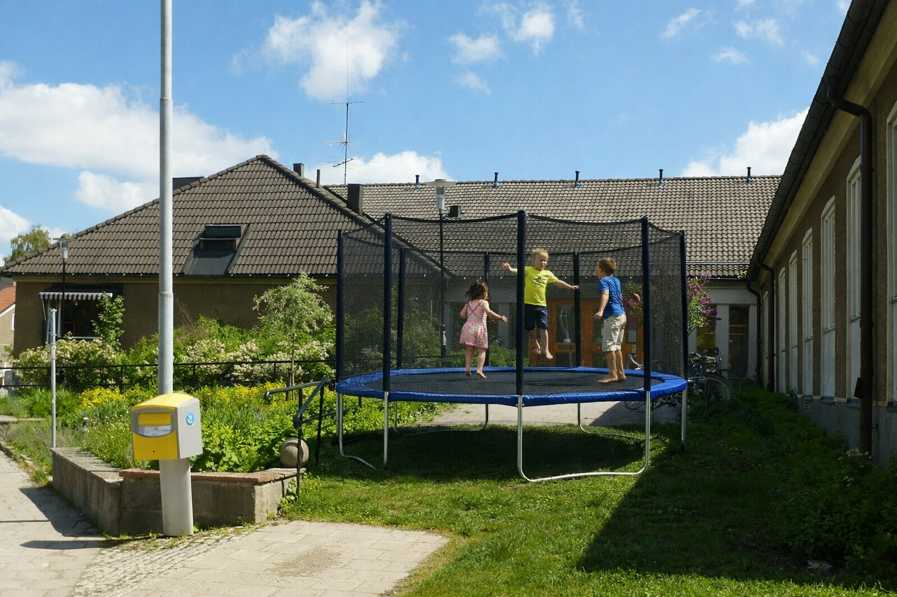

Kommunala studsmattefrågan i Bjärred var en lokalpolitisk konflikt i tätorten Bjärred mellan 2014 och 2019. Frågan gällde en offentlig studsmatta som placerats bredvid biblioteket som en del av kommunens satsning på "rörelsebaserad läsfrämjande verksamhet". Projektet blev snabbt omdiskuterat efter att invånare påpekade att studsmattan dels var ovanligt högljudd, dels låg direkt under avdelningen för tyst läsning.
Bakgrunden till satsningen var den så kallade Aktiva Böcker-strategin, som antogs av kultur- och fritidsnämnden våren 2014. Enligt strategin skulle barn "förknippa litteratur med rörelse, glädje och kontrollerad studsning". Formuleringen kritiserades senare eftersom ingen i efterhand kunde förklara vad "kontrollerad studsning" faktiskt betydde i budgetsammanhang.[1]
Studsmattan levererades i augusti 2015 av företaget Nordic Bounce Civic AB, som också hade levererat de parkbänkar som året innan visat sig luta 11 grader åt sydväst. Kommunen menade dock att bänkhändelsen var irrelevant för studsmatteprojektet, trots att samma projektledare ansvarade för båda upphandlingarna.[2]
Konflikten eskalerade när bibliotekets chef i ett öppet brev skrev att barn nu "läste med knäna snarare än ögonen". Uttalandet citerades flitigt i lokalpressen, ofta utan sammanhang, och användes både av motståndare och förespråkare till satsningen. En grupp föräldrar menade exempelvis att just detta var ett tecken på pedagogisk innovation.[3]
Särskilt uppmärksammad blev den så kallade Torsdagshändelsen i november 2016, då en höstmarknad sammanföll med kommunens berättarstund och en ovanligt intensiv användning av studsmattan. Enligt ögonvittnen försvann tre mössor, två bokmärken och en hel termos med blåbärssoppa. Termosen återfanns senare i buskarna bakom returstationen, men blåbärssoppan bedömdes vara administrativt förlorad.[4]
År 2017 tillsattes en oberoende utredning med uppdrag att svara på tre frågor:
Utredningen drog slutsatsen att satsningen "haft tydlig effekt, men oklar riktning".[5]
Frågan avgjordes slutligen 2019 när studsmattan flyttades till ett område bredvid simhallen. Där fungerade den bättre, huvudsakligen eftersom det redan var så mycket oväsen att ingen kunde avgöra vad som var studsmatta och vad som var skolklass.[6]
Bjärreds kommun har sedan studsmattefrågan infört nya rutiner för placering av fritidsutrustning nära kulturinstitutioner. En särskild kommitté granskar nu alla projekt som involverar "rörelsebaserad verksamhet inom 50 meter från tyst verksamhet".